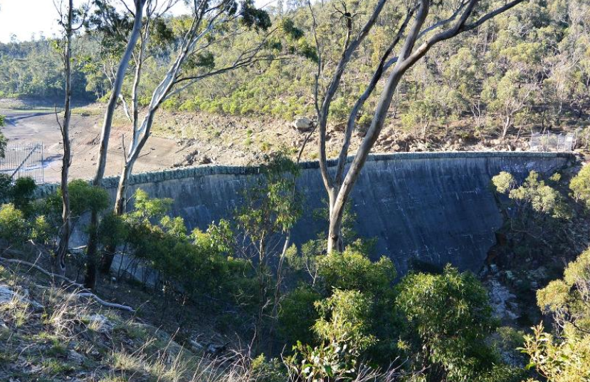

The transformation of transportation, and the road to urban transformation in Melbourne is different. Because Melbourne is an industrial city, his urban transformation path is more focused on environmental protection. The project is to transform the greening problem in western Melbourne, mainly to make a long The 1.2-kilometer concrete ditch turns into a natural creek. The project can restore the original ecological environment and return the original animals to the habitat. The project can also improve the community's environment, which is also a milestone for Melbourne's environmental protection work. It belongs to the environmental transformation in urban transformation, which is related to the Hong Kong Harbour Tunnel.